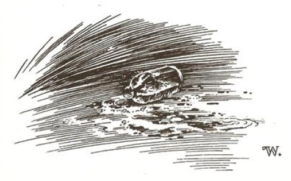
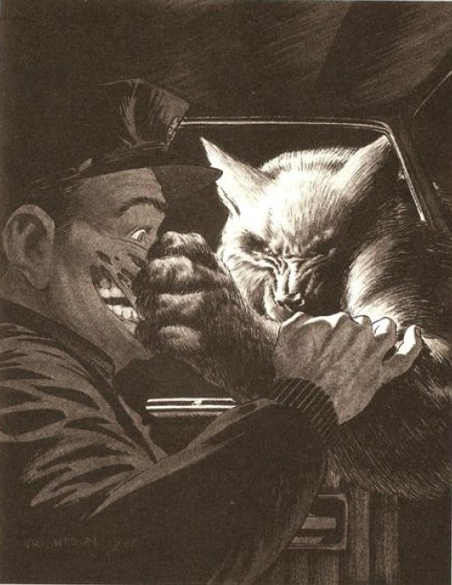

"ELBETTE, ONUN KURTADAM olduğunu düşünüyorum," dedi polis memuru Neary. Oldukça yüksek bir sesle -belki rastlantıydı ama daha çok amaçlı olarak - konuşuyordu ve Stan'in Berber Dükkânı'ndaki konuşmalar birdenbire kesiliverdi. Tarker's Mills halkının hatırladığı en sıcak Ağustos ayının ortasına gelinmişti ve bu gece dolunayın ilk gecesi olacaktı. Yani bütün kasaba nefesini tutmuş bekliyordu.
Memur Neary izleyicilerine dikkatle baktı ve sonra Stan Pelky'nin ortadaki berber sandalyesinin üzerinde, tamamen lisede aldığı eğitimin derinliğinde kalmış, oturaklı, yasalara dayalı ve psikolojik konuşmasına devam etti. (Neary, iri yarı ve yapılı biriydi. Lisede, Tarker's Mills Kaplanları'nın sayılarını6 çoğunlukla o yapardı; derslerdeki çalışmasıysa ona bir miktar C ve pek az sayılamayacak kadar D kazandırmıştı.)
(6. - Sayı: Touchdown : Amerikan Futbolu diye adlandırılan, Rugby’nin deforme edilmiş hali olan nefis oyundaki sayı. Deforme edilen bir şeyin aslından daha iyi olabileceğine dair verilebilecek ender örneklerden biri. Bu oyunda (oyun alanı 100 yarda) hücum eden takım, 4 defa top kullanarak 10 yarda ilerlemek zorundadır. Her 10 yarda ilerleyişte top kullanma hakkı devam eder. En sondaki 100 yarda çizgisi topla geçildiğinde sayı olur, bunun adıysa "touchdown"dır. k.n.)
"Bazı herifler vardır.” diye sürdürdü, "bunlar bir şekilde iki insan gibidirler. Bölünmüş kişilikler gibi yani, bilirsiniz. Ben onlara s.kik şizolar diyorum."
Kendisine gösterilen saygılı sessizliği takdir etmek için bir süre durup ardından devam etti:
"Şimdi, bu herif bence, böyle biri. Dolunay zamanı geldiğinde çıkıp birini öldürdüğünde ne yaptığını bildiğini sanmıyorum. O herhangi biri olabilir - bankada bir veznedar, Kasaba Yolu üzerindeki benzin istasyonlarının birinde pompacı, hatta belki şu anda burada olan biri. Bir anlamda kendi içinde bir hayvan olup dışardan gayet normal görünmek, elbette öyle, ne sandınız! Ama eğer bana vücudundan kıllar fışkıran ve aya uluyan bir herifin varlığına inanıp inanmadığımı soruyorsanız ... hayır. Bu boka sadece çocuklar inanır."
"Peki ya Coslaw’ın oğlu, Neary?" diye sordu Stan, Neary'nin ensesindeki yağ rulolarının etrafında dikkatle çalışırken. Uzun, keskin makası kırt... kırt... sesleri çıkarıyordu.
"Bu söylediklerimi tamamen doğruluyor," diye biraz öfkeyle yanıtlıyor Neary. "Bu boka sadece çocuklar inanır."
Aslında, Marty Coslaw hakkındaki gelişmeler yüzünden çok öfkeliydi. Kasabada, içlerinde Neary'nin yakın arkadaşı olan Alfie Knopfler'in de olduğu altı kişiyi öldüren kaçığı gören ilk tanık bir çocuktu. Peki Neary'nin çocukla görüşmeye izni var mı? Hayır. Çocuğun nerede olduğunu biliyor mu? Hayır! Eyalet Polisi tarafından kendisine verilmiş yazılı ifadeyle idare etmek zorundaydı ve bu kadarını bile alabilmek için başını eğip selam vermek, sonra geri geri yürümek ve lanet olası bir şekilde yalvarmak zorunda kalmıştı. Bunların tek sebebi, eyalet polisinin kendisini bir oyuncak gibi gördüğü, kendi ayakkabılarım bile bağlamaktan aciz olduğunu düşündüğü bir küçük kasaba memuru olmasıydı. Bunların tek sebebi onlarınki gibi lanet olası bir Gri Ayı şapkasının olmamasıydı. Ve o yazılı ifade! Onu kıçım silmek için bile kullanabilirdi. Coslaw’ın oğlunun anlattıklarına göre, şu "canavar" iki metre boyunda ve çıplaktı. Vücudunun her yeri koyu renk kıllarla kaplıydı. Kocaman dişleri, yeşil gözleri vardı ve bir çuval panter boku gibi kokuyordu. Pençeleri vardı, ama pençeler ele de benziyordu. Çocuk bir kuyruğunun da olduğunu düşünüyordu. İsa aşkına, bir kuyruk.
"Belki," diye söze giriyor, duvarın yanındaki sandalyelerin birinde oturan Kenny Franklin, "belki de bu herif bir tür kostüm giyiyordun Bilirsin, maske falan gibi bir şeyler işte."
"Buna inanmıyorum," diyor Neary, sözcüklerin üzerinde durarak, varmak istediği noktanın önemini vurgularcasına başını sallıyor. Stan, Neary'nin ensesindeki dolgun yağ rulolarından birine batırmamak için makasım geri çekmek zorunda kalıyor. "Hayır, efendim! Buna inanmıyorum. Yaz tatiline girmeden önce, çocuk okulda bir sürü kurtadam öyküsü duydu - kendisi de bunu itiraf ediyor - ve sonra o sandalyede oturup bunları düşünmekten, kafasında bu senaryoyu kurmaktan başka yapacak bir şeyi yoktu zaten. Hepsi lanet olası bir biçimde psikolojik, anlıyor musunuz? Ay ışığında çalıların arasından gelen sen olsaydın, çocuk senin bir kurt olduğunu düşünecekti, Kenny."
Kenny biraz huzursuzca gülüyor.
"Hayır," diyor Neary, sıkıntıyla. "Çocuğun lanet olası kanıtları hiç yeterli değil."
Marty Coslaw'ın Stowe'daki akrabalarının evinde verdiği yazılı ifadeye karşı duyduğu iğrenme ve hayal kırıklığı içinde Memur Neary şu satırları gözden kaçırmıştı: "Onların dördü birden yüzünde - sanırım buna yüz diyebiliriz - patladı ve tahmin ediyorum bu onun gözünü çıkardı. Sol gözünü."
Eğer Memur Neary bu noktaya kafa yorsaydı - ama yormadı - daha da kibirli bir şekilde gülerdi; çünkü 1984'ün o sıcak, durgun Ağustos ayında sadece bir tek kasaba sakini göz bandı takıyordu ve herkesin arasından onun katil olduğunu düşünmek imkânsızdı. Neary, onun katil olduğuna inanmaktansa, katilin kendi annesi olduğuna inanırdı.
"Bu davayı çözecek tek bir şey var," diyordu Memur Neary, duvarın yanında oturmuş, Pazar sabahı saç tıraşlarını bekleyen dört ya da beş adama doğru parmağım doğrultarak. "O da iyi bir polis araştırmasıdır. Bunu yapacak adam olmaya niyetliyim. Herifi teslim ettiğimde Şu Gri Şapkalı Eyaletçi’ler neye uğradıklarını şaşıracaklar." Neary'nin yüzü hayalci bir hal alıyor. "Herhangi biri," diyor, "bir veznedar ... bir pompacı. . . barda birlikte içtiğiniz o heriflerden biri. Ama iyi bir polis araştırması bunu çözecektir. Bu laflarıma dikkat edin."
Ama Memur Neary'nin iyi bir polis araştırması, o gece Tarker's Mills'in batısındaki iki toprak yolun kesişme noktasına park etmiş Dodge kamyonetinin içinde otururken, gümüş ay ışığıyla aydınlanmış, kıllı bir kolun açık pencereden içeriye uzanmasıyla birlikte son buluyordu. Domuzlarınkini andıran kısık bir homurtu ve dehşet verici, yabanıl bir koku -hayvanat bahçesindeki aslan kafesinden alabileceğiniz bir koku gibiydi- vardı.
Bir çatırtıyla yana döndürülen kafası yeşil bir gözün içine bakıyordu. Kurtun tüylerini gördü, siyah, nemli burnunu. Burnun geriye kıvrılışıyla dişleri gördü. Canavar neredeyse oyuncu bir edayla ona bir pençe atmıştı ve Neary'nin sağ yanağı dişlerinin görünebileceği bir şekilde yarılmış aşağıya doğru sarkıyordu. Kan her yere fışkırdı. Sıcak kanın, gömleğinin omzundan aşağıya doğru ağır ağır aktığını hissedebiliyordu. Haykırdı; çığlıklar ağzından ve parçalanmış yanağından dışarı fırlıyordu. Canavarın kımıldanan omuzlarının üzerinden, aşağıya doğru sel gibi beyaz ışıklarını akıtan ayı görebiliyordu.
Kemerindeki .45'liği ve .30-.30 'luğu tamamen unuttu. Bu şeyin nasıl da s.kik bir şekilde psikolojik olduğunu tamamen unuttu. İyi bir polis araştırmasını tamamen unuttu. Bunların yerine düşünceleri o sabah berber dükkânında Kenny Franklin'in söylediği bir şeye sabitleniyordu. Belki de bu herif bir tür kostüm gidiyordur. Bilirsin, maske falan gibi bir şeyler işte.
İşte bu yüzden, kurtadam Neary'nin boğazına ulaştığında, Neary de onun yüzüne ulaşıyordu. Uzayan yapıştırıcının çıtırtısıyla birlikte lateks maskenin yerinden çıkıp düşeceğini ve böylece katili görebileceğini uman Neary, iki avuç dolusu sert, telimsi kılı kavrayıp çekti.
Ama hiçbir şey olmadı - canavardan yükselen acı ve öfke dolu bir kükreme dışında. Yaratık ona pençesiyle güçlü bir darbe indiriyor - evet, onun bir el olduğunu görüyordu, ama korkunç derecede biçimsizleşmiş bir el, çocuk doğru söylüyormuş - ve adamın gırtlağı parçalanıp açılıverdi. Kan, kamyonetin ön camına ve kontrol panelinin her yanına fışkırıyordu; kan Memur Neary'nin apış arasına sıkıştırılmış duran Busch şişesinin içine damlıyordu.
Kurtadamın diğer eli, Neary'nin yeni kesilmiş saçlarına uzandı ve adamı Ford kamyonetin sürücü bölmesinden dışarıya beline kadar şiddetle çekti. Zafer dolu bir uluşuyun ardından yüzünü ve burnunu Neary'nin boynuna gömdü. Bira, devrilmiş şişeden fokurdayarak dışarıya taşıp fren ve debriyaj pedallarının yanında köpürürken, kurtadam besleniyordu.
Tüm bunlar psikoloji için çok fazlaydı.
Tüm bunlar iyi bir polis araştırması için çok fazlaydı.

